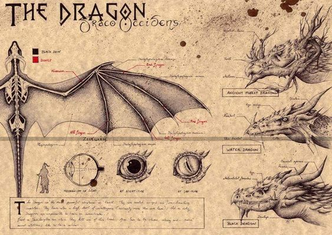

Sereias

Das incríveis criaturas que habitam o universo de fantasia do reino das águas, as sereias são certamente uma das mais conhecidas. Normalmente descritas como lindas mulheres com cabeça e torso humanos e cauda de peixe, poucas pessoas sabem que na origem grega da mitologia das sereias, elas eram monstros com corpo de pássaro e cabeça humana.
A única beleza que conservaram foi a linda voz, que usavam para atormentar e enganar os marinheiros, que enfeitiçados com a voz das sereias, se atiravam ao mar e se afogavam.
Outra versão considera que Afrodite (a deusa da sensualidade, do amor e da beleza) tirou o encanto dessas mulheres por inveja. Acredita-se também que a divindade grega condenou as sereias porque elas desprezavam as artes do amor.

Dragão
são criaturas mitológicas presentes na mitologia de diversos povos, civilizações e culturas, com destaque para as tradições chinesa e europeia. A sua descrição depende do mito ou lenda em que aparece, mas são normalmente representados como lagartos ou serpentes de grande porte, escamas e asas, podendo ainda ter plumas, poderes mágicos e a capacidade de soprar fogo. Podem ser somente feras destruidoras ou ter funções e simbologia distintas, como fontes sobrenaturais de sabedoria e força.

Por serem relativamente grandes, é comum que apareçam como adversários de deuses ou heróis lendários em grandes épicos. É comum também que sejam usados para explicar fenómenos através da atribuição de tarefas míticas às criaturas, como a sustentação do mundo ou o controle de fenômenos climáticos
Na China, a presença de dragões na cultura é anterior mesmo à linguagem escrita e persiste até os dias de hoje, sendo o dragão um símbolo nacional chinês. Na cultura chinesa antiga, os dragões possuíam um importante papel na previsão climática, já que eram considerados os responsáveis pelas chuvas.
pagina de inicio
Vampiro
Wendigo